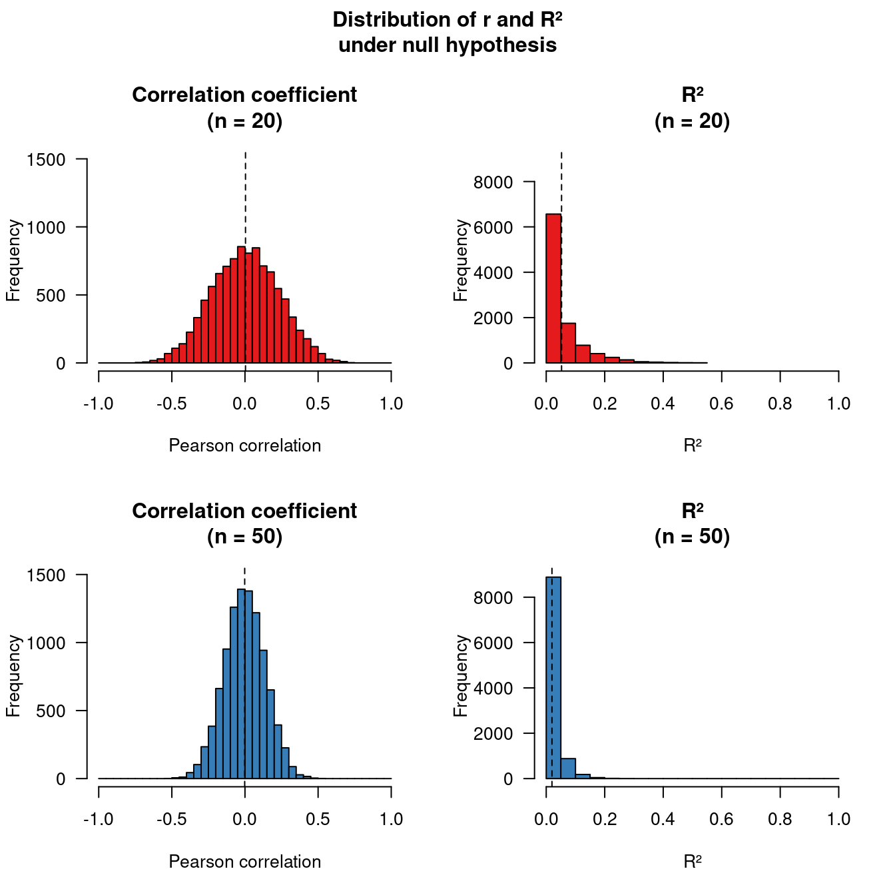
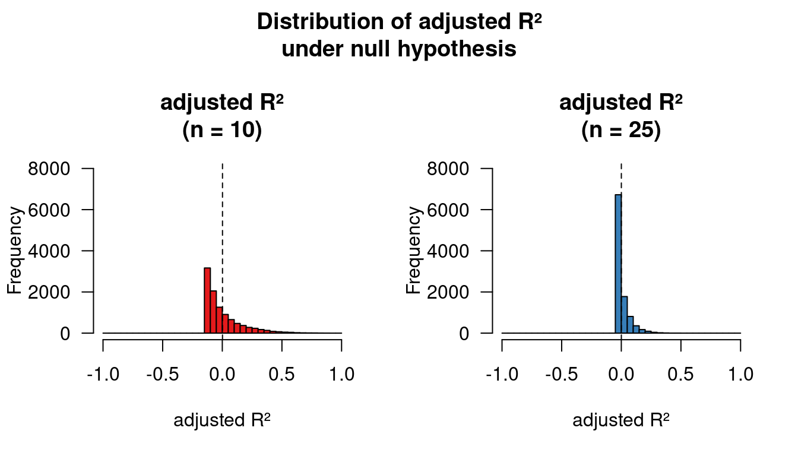
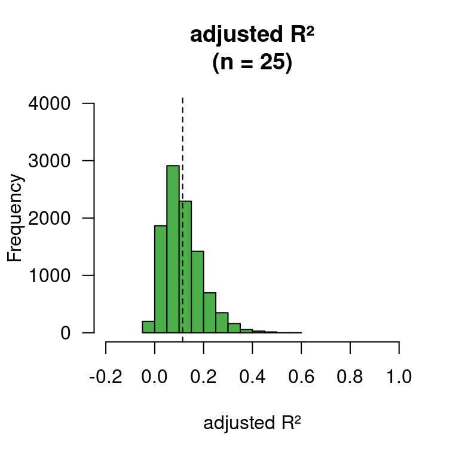
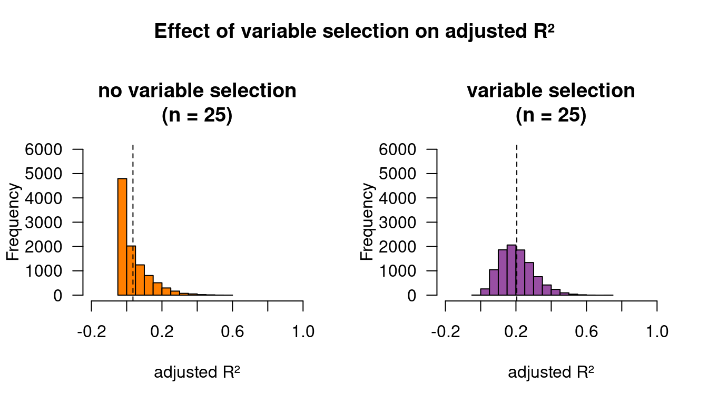

Why reported R² values are often too high
After reading a couple of papers whose conclusions were heavily based on R² (“variance explained”) values, I thought I’d summarise why I’m often skeptical of such conclusions. The reason, in a nutshell, is that reported R² values tend to overestimate how much of the variance in the outcome variable the model can actually “explain”. To dyed-in-the-wool quantitative researchers, none of this blog post will be new, but I hope that it will make some readers think twice before focusing heavily on R² values.
What’s R²?
R², or the coefficient of determination, takes on values between 0 and 1 and represents the proportion of the variance in the outcome variable that the predictors in a regression model jointly “explain”. There are a couple of ways to calculate R², and for ordinary regression models, all of them produce the same result. However, for other regression models, such as logistic regression or mixed-effects models, the different definitions of R² can produce different results, so that it’s not clear which definition, if indeed any, is the right one in every case. Here, I’ll stick to discussing R² for ordinary regression models.
Incidentally, I put “variance explained” between scare quotes, as I think “variance described” would be a better way of putting it. “Variance explained” could suggest that the regression model has the status of an explanatory theoretical model that truly attempts to explain why the data look the way they do. The regression model does no such thing.
Problems with R²
I’ve written about my skepticism about standardised effect sizes before (here and here). R² inherits all of the problems I discussed there and adds some additional ones. To be clear, I don’t doubt that R² can be used sensibly; it’s just that it often isn’t.
The first problem with taking R² values at face value is that they tend to be too high: even if the predictor variables and the outcome are actually unrelated, you’ll find that the predictors “explain” some proportion of the variance in the outcome. This is easiest to see when you have one predictor variable and one outcome variable. Even if the predictor and the outcome are unrelated, sampling error will cause the correlation coefficient (r) to deviate from 0 in any one sample. These deviations from 0 can be both positive or negative (left panels in the figure below), and averaged over many samples, the correlation coefficient will be 0 (dashed lines). When you have one predictor and one outcome variable, R² can simply be calculated by squaring the correlation coefficient. But when you square negative values, you get positive numbers, so that sampling error will cause R² to be positive (right panels) – there will always be some “variance explained”! What’s more, since sampling error plays a bigger role in small samples, this overestimation of “variance explained” is larger in smaller samples (top vs. bottom panels).
Second, R² always increases when you add more predictors to the regression model. But by adding more and more predictors, you’re bound to model random fluctuations (‘noise’) in the data. As a result, if you were to apply the same model to a new dataset, you could find that the more complex model actually has a worse fit than a simpler model.
‘R² hacking’
You may object that while the above may be true, it’s also irrelevant: your statistics package also outputs an ‘adjusted R²’ value that corrects the R² value based on the sample size and the number of predictors. Adjusted R² values can be negative so that they aren’t biased away from 0 (figure below).

This is true in principle. In practice, though, reported adjusted R² values are often too high, too. The reason is what I’ll call ‘R² hacking’: analytical decisions in variable selection, data transformation and outlier treatment with which the analyst deliberately or indeliberately enhances the model’s fit to the present data, but which cause the model to generalise poorly to new data. R² hacking is like p hacking (Update (2023-08-09): This link is broken.), but rather than selecting for statistical significance, the analyst (deliberately or indeliberately) selects for larger (adjusted or unadjusted) R² values.
The effects of R² hacking are most easily illustrated in the simple scenario where the analyst has several predictor variable at their disposal, for the sake of parsimony selects the predictor with the highest absolute sample correlation to the outcome as the sole predictor in a simple regression model, and then reports the model’s adjusted R². The code below simulates such a scenario and assumes that none of the predictors are actually related to the outcome.
# Run 10,000 simulations
adjrs <- replicate(1e4, {
# Generate dataset with 25 observations for 1 outcome and 10 predictors.
# None of the predictors is actually related to the outcome here:
dat <- data.frame(y = rnorm(25),
x1 = rnorm(25), x2 = rnorm(25), x3 = rnorm(25),
x4 = rnorm(25), x5 = rnorm(25), x6 = rnorm(25),
x7 = rnorm(25), x8 = rnorm(25), x9 = rnorm(25),
x10 = rnorm(25))
# Select predictor with highest absolute sample correlation to outcome
# as sole predictor in simple regression model
formula.lm <- as.formula(paste("y ~ ",
noquote(names(which.max(abs(cor(dat)[1,-1]))))))
# Run simple regression model and calculate adjusted R²
adjr <- summary(lm(formula.lm, dat))$adj.r.squared
# Return adjusted R²
return(adjr)
})
# Plot histogram with results
par(mfrow = c(1,1), las = 1)
hist(adjrs, col = "#4DAF4A",
xlim = c(-0.2, 1),
ylim = c(0, 4000),
main = "adjusted R²\n(n = 25)",
xlab = "adjusted R²")
abline(v = mean(adjrs), lty = 2)
As the histogram above shows, prior variable screening causes the average adjusted R² value to be higher than zero. This positive bias also occurs when the predictors actually are related to the outcome. For the figure below, I also simulated 10,000 datasets with one outcome variable and ten possible predictors. This time, all of the predictors were weakly related to the outcome. The left panel shows the distribution of the adjusted R² value when we always choose the same predictor for the simple regression model (i.e., no data-dependent variable selection). The average adjusted R² in this case is about 4%. The panel on the right shows what happens when we select the predictor with the highest sample correlation (data-dependent variable selection): the average adjusted R² is now about 21%. So, predictor selection inflates the “variance explained” by a factor of 5 in this case.
Update (2023-08-09): I added and reran the R code.
# Run 10,000 simulations
adjrs <- replicate(1e4, {
# Generate dataset with 25 observations for 1 outcome and 10 predictors.
# All of the predictors are weakly related to the outcome.
y = rnorm(25)
x1 = 0.2*y + rnorm(25)
x2 = 0.2*y + rnorm(25)
x3 = 0.2*y + rnorm(25)
x4 = 0.2*y + rnorm(25)
x5 = 0.2*y + rnorm(25)
x6 = 0.2*y + rnorm(25)
x7 = 0.2*y + rnorm(25)
x8 = 0.2*y + rnorm(25)
x9 = 0.2*y + rnorm(25)
x10 = 0.2*y + rnorm(25)
dat <- data.frame(y, x1, x2, x3, x4, x5, x6, x7, x8, x9, x10)
# Select predictor with highest absolute sample correlation to outcome
# as sole predictor in simple regression model
formula.lm <- as.formula(paste("y ~ ",
noquote(names(which.max(abs(cor(dat)[1,-1]))))))
# Run simple regression model and calculate adjusted R²
adjr_selected <- summary(lm(formula.lm, dat))$adj.r.squared
# Always pick first variable
adjr_fixed <- summary(lm(y ~ x1, dat))$adj.r.squared
# Return adjusted R²
return(list(adjr_selected, adjr_fixed))
})
# Plot histogram with results
par(mfrow = c(1, 2), oma = c(0, 0, 3, 0), las = 1)
hist(unlist(adjrs[2, ]), col = "#FF7F00",
xlim = c(-0.2, 1),
ylim = c(0, 6000),
main = "no variable selection\n(n = 25)",
xlab = "adjusted R²")
abline(v = mean(unlist(adjrs[2, ])), lty = 2)
hist(unlist(adjrs[1, ]), col = "#984EA3",
xlim = c(-0.2, 1),
ylim = c(0, 6000),
main = "variable selection\n(n = 25)",
xlab = "adjusted R²")
abline(v = mean(unlist(adjrs[1, ])), lty = 2)
title("Effect of variable selection on adjusted R²", outer = TRUE)
The reason for this positive bias is that the adjusted R² value was corrected for the number of predictors that occur in the model (1) – not for the number of predictors that were actually consider when building the model (10). But at least in this case, we know what the number of predictors considered was. Similar situations arise, however, when the predictors were selected by more informal procedures such as visually inspecting the data before deciding which predictors are worth a place in the model or trying out different data transformations and picking the one that yield the prettiest scatterplots.
Conclusion
The reason I’m often skeptical about conclusions based on adjusted or unadjusted R² values is that these values are bound to be overestimates: the same model applied to a new dataset will in all likelihood produce appreciably poorer fits and may sometimes be worse than having no regression model at all. There are methods to minimise this danger, but those are for another time.
Software versions
devtools::session_info()─ Session info ───────────────────────────────────────────────────────────────
setting value
version R version 4.3.1 (2023-06-16)
os Ubuntu 22.04.3 LTS
system x86_64, linux-gnu
ui X11
language en_US
collate en_US.UTF-8
ctype en_US.UTF-8
tz Europe/Zurich
date 2023-08-09
pandoc 3.1.1 @ /usr/lib/rstudio/resources/app/bin/quarto/bin/tools/ (via rmarkdown)
─ Packages ───────────────────────────────────────────────────────────────────
package * version date (UTC) lib source
cachem 1.0.6 2021-08-19 [2] CRAN (R 4.2.0)
callr 3.7.3 2022-11-02 [1] CRAN (R 4.3.1)
cli 3.6.1 2023-03-23 [1] CRAN (R 4.3.0)
crayon 1.5.2 2022-09-29 [1] CRAN (R 4.3.1)
devtools 2.4.5 2022-10-11 [1] CRAN (R 4.3.1)
digest 0.6.29 2021-12-01 [2] CRAN (R 4.2.0)
ellipsis 0.3.2 2021-04-29 [2] CRAN (R 4.2.0)
evaluate 0.15 2022-02-18 [2] CRAN (R 4.2.0)
fastmap 1.1.0 2021-01-25 [2] CRAN (R 4.2.0)
fs 1.5.2 2021-12-08 [2] CRAN (R 4.2.0)
glue 1.6.2 2022-02-24 [2] CRAN (R 4.2.0)
htmltools 0.5.5 2023-03-23 [1] CRAN (R 4.3.0)
htmlwidgets 1.6.2 2023-03-17 [1] CRAN (R 4.3.1)
httpuv 1.6.11 2023-05-11 [1] CRAN (R 4.3.1)
jsonlite 1.8.7 2023-06-29 [1] CRAN (R 4.3.1)
knitr 1.39 2022-04-26 [2] CRAN (R 4.2.0)
later 1.3.1 2023-05-02 [1] CRAN (R 4.3.1)
lifecycle 1.0.3 2022-10-07 [1] CRAN (R 4.3.0)
magrittr 2.0.3 2022-03-30 [1] CRAN (R 4.3.0)
memoise 2.0.1 2021-11-26 [2] CRAN (R 4.2.0)
mime 0.10 2021-02-13 [2] CRAN (R 4.0.2)
miniUI 0.1.1.1 2018-05-18 [1] CRAN (R 4.3.1)
pkgbuild 1.4.2 2023-06-26 [1] CRAN (R 4.3.1)
pkgload 1.3.2.1 2023-07-08 [1] CRAN (R 4.3.1)
prettyunits 1.1.1 2020-01-24 [2] CRAN (R 4.2.0)
processx 3.8.2 2023-06-30 [1] CRAN (R 4.3.1)
profvis 0.3.8 2023-05-02 [1] CRAN (R 4.3.1)
promises 1.2.0.1 2021-02-11 [1] CRAN (R 4.3.1)
ps 1.7.5 2023-04-18 [1] CRAN (R 4.3.1)
purrr 1.0.1 2023-01-10 [1] CRAN (R 4.3.0)
R6 2.5.1 2021-08-19 [2] CRAN (R 4.2.0)
Rcpp 1.0.11 2023-07-06 [1] CRAN (R 4.3.1)
remotes 2.4.2 2021-11-30 [2] CRAN (R 4.2.0)
rlang 1.1.1 2023-04-28 [1] CRAN (R 4.3.0)
rmarkdown 2.21 2023-03-26 [1] CRAN (R 4.3.0)
rstudioapi 0.14 2022-08-22 [1] CRAN (R 4.3.0)
sessioninfo 1.2.2 2021-12-06 [2] CRAN (R 4.2.0)
shiny 1.7.4.1 2023-07-06 [1] CRAN (R 4.3.1)
stringi 1.7.12 2023-01-11 [1] CRAN (R 4.3.1)
stringr 1.5.0 2022-12-02 [1] CRAN (R 4.3.0)
urlchecker 1.0.1 2021-11-30 [1] CRAN (R 4.3.1)
usethis 2.2.2 2023-07-06 [1] CRAN (R 4.3.1)
vctrs 0.6.3 2023-06-14 [1] CRAN (R 4.3.0)
xfun 0.39 2023-04-20 [1] CRAN (R 4.3.0)
xtable 1.8-4 2019-04-21 [1] CRAN (R 4.3.1)
yaml 2.3.5 2022-02-21 [2] CRAN (R 4.2.0)
[1] /home/jan/R/x86_64-pc-linux-gnu-library/4.3
[2] /usr/local/lib/R/site-library
[3] /usr/lib/R/site-library
[4] /usr/lib/R/library
──────────────────────────────────────────────────────────────────────────────